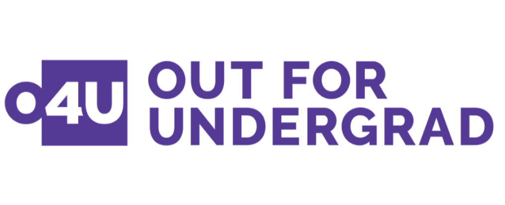
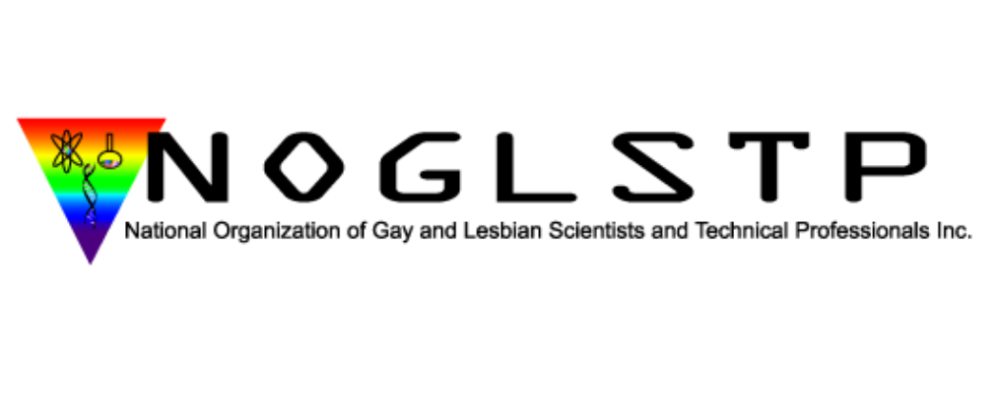
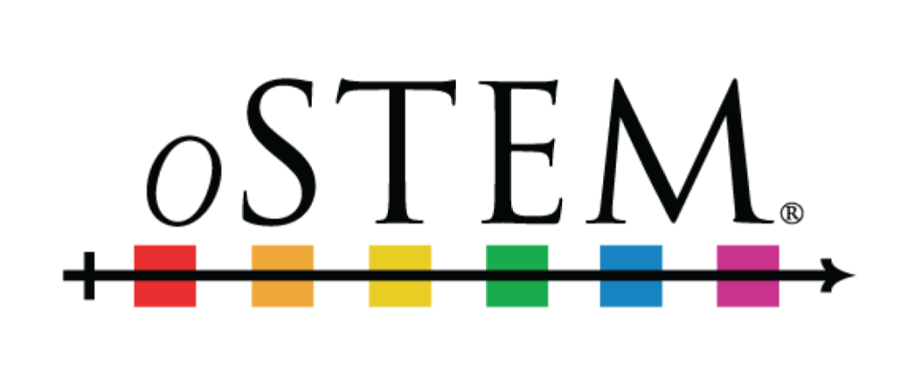

500 Queer Scientists

Back in June, I noticed a couple of posts circulating around Twitter from an account called "500 Queer Scientists." As a person who identifies both as gay and as a scientist, I was curious, so I clicked. 500 Queer Scientists is a movement that seeks to increase the visibility of LGBTQ+ people who are working in STEM. As a marginalized population, LGBTQ+ people face increased discrimination in the workplace, and in society at large - and the STEM fields are no exception. This issue has been recently highlighted at my own University (see: Is Science too Straight? published in BU Research), and on an international level (see: LGBTQ scientists are still left out in Nature). Moreover, some great empirical research has recently emerged on this topic (see this article by Bryce Hughes).
Fortunately, people have started to discuss the issues facing LGBTQ+ people working in STEM, and organizations are forming to take action. 500 Queer Scientists is one such organization. The movement is modeled after 500 Women Scientists, a grassroots organization started by four women who met in graduate school at UC Boulder. They created a form letter asking women scientists and supporters to pledge to build a more inclusive and diverse STEM community. Originally aiming to collect 500 signatures, they now have over 20,000 from around the world, and have grown into an organization with a mentorship program and other resources.
Similarly, 500 Queer Scientists seeks to connect LGBTQ+ scientists from around the world, and to show the world that we do exist. I decided to add my own name to the list, and submitted my bio to the site back in June. I received some great responses on Twitter, and encouragment from colleagues at work. Overall, posting to the site has been a great confidence-booster, and has connected me with several other LGBTQ+ scientists online. With well over 500 posts now on the site (possibly over 1000), I look forward to seeing the group evolve.
In addition to 500 Queer Scientists, here are some other great resources for LGBTQ+ people in STEM that I've come across:
Out for Undergrad (O4U)
Out for Undergrad puts on four conferences each year targeted at LGBTQ+ undergraduates aspiring to work in Business, Marketing, Tech, and Engineering. In 2016, my partner and I were fortunate to be selected to attend the Engineering conference which was held at Stanford University in Palo Alto, California. O4U paid for the airfare and hotel for all attendees, and they put on a fantastic event. Of note were sessions on how to network, keynotes by Lynn Conway and Raynard S. Kington, a career fair, and several social events (some were open-bar!)
NOGLSTP
The National Organization of Gay and Lesbian Scientists and Technical Professions (NOGLSTP) is an organization that aims to empower LGBTQ+ individuals working in STEM with education advocacy, career networking opportunities, professional development, and peer support. They run a biennial conference called the "Out to Innovate Career Summit." I have never been, but it looks like a great event.
oSTEM
From their website: "oSTEM is a nonprofit professional society focused on LGBTQ people in the STEM community" They have over 75 student chapters at colleges/universitys across the US. Recently, a chapter was started for graduate students at BU, and I look forward to getting involved. oSTEM holds and annual national conference. This year (2018) it will be held in Houston, Texas.